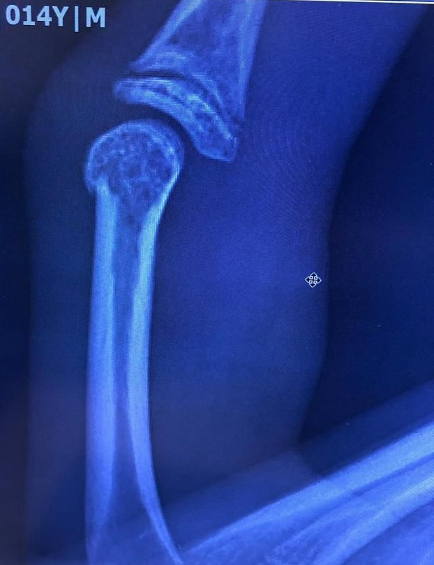

This lesson covers real life applications of X-Rays in radiology, specifically CT scans, Fluoroscopy and Radiography. We also explore the biological effects of X-ray exposure, short-term to patients and long-term to medical staff.
Introduction
Radiology is the branch of medicine that uses X-Ray imaging technology in order to diagnose and provide treatment for diseases. We know that when X-Ray photons strike an object, depending on the density of the object, some of the X-rays will be absorbed, while letting the others pass through.
This is the principle upon which we can form images of our body's internal structure. We pass X-Rays through our body, aimed at a photographic plate. Muscle and soft tissue are much less dense, and hence allow the X-Rays to pass through them, hitting the photographic plate and turning certain regions black. Dense tissue like bones will absorb more X-Rays, showing up as white on the photographic plate.
Pictured on the right is a radiograph of a fractured left ring finger belonging to one of the authors of this website. Low density material such as air is represented as black on the final image. Very dense material such as metal or contrast material is represented as white. Bodily tissues are varying degrees of grey, depending on density, and thickness.
X-Ray Exposure
There are of course health considerations when working with X-Rays, they are a form of ionizing radiation, and ionizing radiation possibly creates double-strand breaks in cells that allow excess DNA, leftover from natural processes such as genomic DNA repairs or viral infections, to enter and cause cellular mutations. These mutations in our DNA might lead to cancer later in life. For this reason, X-rays are classified as a carcinogen by the World Health Organization.
Some body parts are more susceptible to the random damaging effects of radiation. These are generally tissues with rapidly dividing cells, for example, radiation dose to the stomach is over 20 times more likely to result in a fatal cancer than the same dose to bone.
Dose dependent biological effects become measurable above 50mSv (millisieverts) and a whole body dose of greater than 10Sv (sieverts) is universally lethal. Singapore's background radiation level is about 0.1 micro-Sievert per hour (µSv/h) = 0.0001mSv. Diagnostic investigations can involve doses ranging from 0.02mSV (chest X-ray) to 15.4mSv (CT abdomen). This means that a chest X-ray amounts to 0.02/0.0001=200 hours of background radiation and a CT abdomen is equivalent to 15.4/0.0001=154000 hours=17.580 years of background radiation!
Despite all this, the benefits of radiographic technology far outweigh the potential negative consequences of using them.
Radiography

Radiography is the stereotypical medical imaging procedure that comes to mind when one thinks of "X-Ray imaging". It is used to diagnose or treat patients by recording images of the internal structure of the body to assess the presence or absence of disease, foreign objects, and structural damage or anomaly. Radiography is used in many types of examinations and procedures where a record of a static image is desired. Some examples include:
- Dental examination
- Verification of correct placement of surgical markers prior to invasive procedures
- Mammography
- Orthopedic evaluations
- Spot film or static recording during fluoroscopy
- Chiropractic examinations
Pictured on the right is a radiograph of one of the authors' spines, taken for diagnosis of his scoliosis.
CT Scans
Computerised Tomography, commonly abbreviated CT Scans, is a non-invasive medical procedure used to produce cross sectional images of the body for a variety of diagnostic and therapeutic purposes. A CT scan involves a higher radiation dose than conventional radiography because the CT image is reconstructed from many individual X-ray projections.

As compared to radiography, CT scans are much more comprehensive, images of internal organs, bones, soft tissue, and blood vessels provide greater clarity and more details than conventional X-Ray images. The X-ray beam moves in a circle around the body, allowing many different views of the body in much greater detail. The X-ray information is sent to a computer that interprets the X-ray data and displays it as a 3-dimensional model.